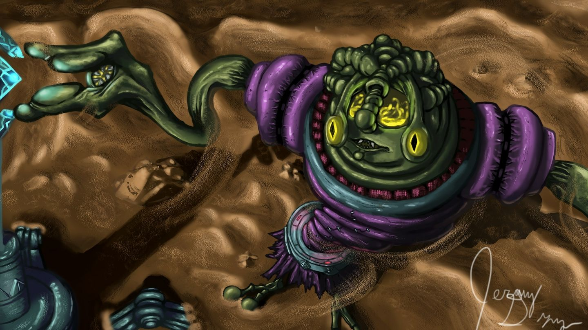
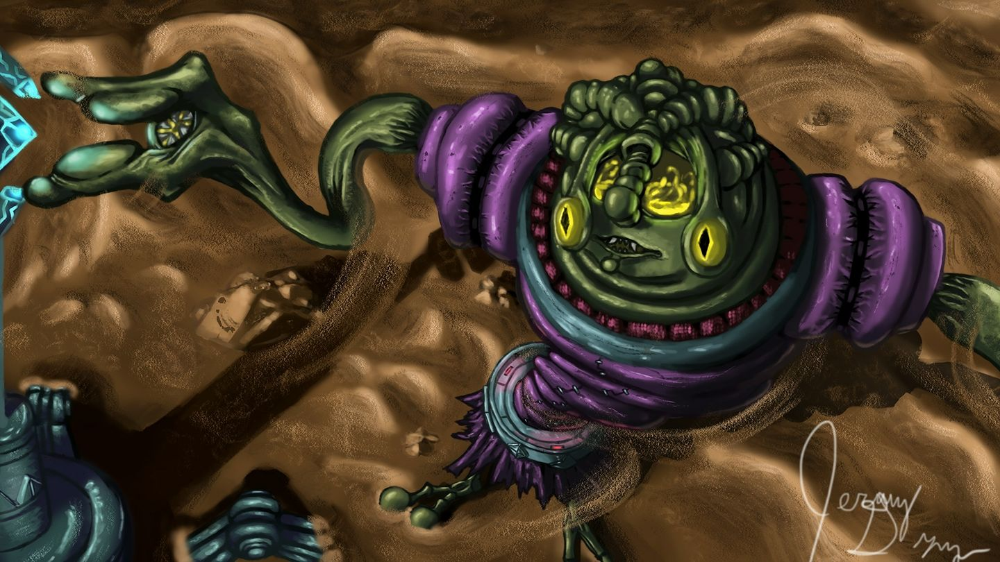

Digital Illustration

 

My favorite completed digital pieces.
Heres some reasons why I enjoy digital illustation:
- It is a place where i can be care free about what im creating and mistakes can easily be relplaced, removed or overwritten.
- It is a way i go about meditating when i need some escape.
- The ability to use layers allows you to create some guardrails on your piece that can result in some very realistic peices.